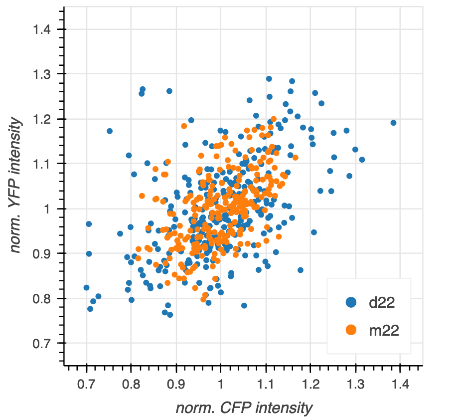
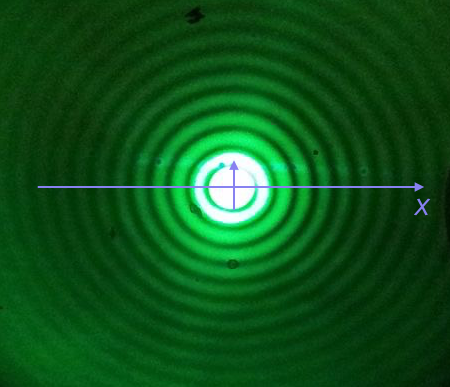

# Colab setup ------------------
import os, sys
if "google.colab" in sys.modules:
data_path = "https://biocircuits.github.io/chapters/data/"
else:
data_path = "data/"
# ------------------------------
import numpy as np
import scipy.special
import pandas as pd
import colorcet
# Our main plotting package (must have explicit import of submodules)
import bokeh.io
import bokeh.models
import bokeh.plotting
# Enable viewing Bokeh plots in the notebook
bokeh.io.output_notebook()Appendix B14: Making plots
We have seen that Pandas is a power tool for loading and organizing data sets, as well as computing summary statistics from them. In nearly all applications with data, and indeed with theoretical models, we want to be able to plot them. In this section, we will learn about how to make plots with Bokeh.
Importantly, note that Bokeh’s submodules often have to be explicitly imported, as we did in the code cell at the top of this notebook. Note also that if you want your plots to be viewable (and interactive) in the notebook, you need to execute
bokeh.io.output_notebook()at the top of the notebook (as we have done). Finally, note that we also have to have installed the Bokeh JupyterLab extension.
Bokeh’s grammar and our first plot with Bokeh
Constructing a plot with Bokeh consists of four main steps.
- Creating a figure on which to populate glyphs (symbols that represent data, e.g., dots for a scatter plot). Think of this figure as a “canvas” which sets the space on which you will “paint” your glyphs.
- Defining a data source that is the reference used to place the glyphs.
- Choose the kind of glyph you would like.
- Annotate the columns of data source to determine how they are used to place (and possibly color, scale, etc.) the glyph.
After completing these steps, you need to render the graphic.
Let’s go through these steps in generating a scatter plot of the data set So you have the concrete example in mind, the final graphic will look like this:

Before plotting, we of course to load in the data set and compute the normalized intensity for each strain as we did in the previous section.
df = pd.read_csv(os.path.join(data_path, "elowitz_et_al_2002_fig_3a.csv"))
df[["norm CFP", "norm YFP"]] = df.groupby("strain", group_keys=False)[
["CFP", "YFP"]
].apply(lambda x: x / x.mean())With the data set ready, we can proceed to plotting.
- Our first step is creating a figure, our “canvas.” In creating the figure, we are implicitly thinking about what kind of representation for our data we want. That is, we have to specify axes and their labels. We might also want to specify the title of the figure, whether or not to have grid lines, and all sorts of other customizations. Naturally, we also want to specify the shape of the figure.
(Almost) all of this is accomplished in Bokeh by making a call to bokeh.plotting.figure() with the appropriate keyword arguments. Note that we set the x_range and y_range keyword arguments such that the x- and y-axes have the same scale.
# Create the figure, stored in variable `p`
p = bokeh.plotting.figure(
frame_width=300,
frame_height=300,
x_axis_label='norm. CFP intensity',
y_axis_label='norm. YFP intensity',
x_range=[0.65, 1.45],
y_range=[0.65, 1.45],
)There are many more keyword attributes you can assign, including all of those listed in the Bokeh Plot class and the additional ones listed in the Bokeh Figure class.
- Now that we have set up our canvas, we can decide on the data source. It is convenient to create a ColumnDataSource, a special Bokeh object that holds data to be displayed in a plot. (We will later see that we can change the data in a ColumnDataSource and the plot will automatically update!) Conveniently, we can instantiate a ColumnDataSource directly from a Pandas data frame.
source = bokeh.models.ColumnDataSource(df)We could also instantiate a data source using a dictionary of arrays, like
source = bokeh.models.ColumnDataSource(dict(x=[1, 2, 3, 4], y=[1, 4, 9, 16]))We will choose dots (or circles) as our glyph. This kind of glyph requires that we specify which column of the data source will serve to place the glyphs along the \(x\)-axis and which will serve to place the glyphs along the \(y\)-axis.
We choose the
'norm CFP'column to specify the \(x\)-coordinate of the glyph and the'norm YFP'column to specify the \(y\)-coordinate. We already made this decision when we set up our axis labels, but we did not necessarily have to make that decision at that point.
Steps 3 and 4 are accomplished by calling one of the glyph methods of the Bokeh Figure instance, p. Since we are choosing dots, the appropriate method is p.scatter(), and we use the source, x, and y kwargs to specify the positions of the glyphs.
p.scatter(
source=source,
x='norm CFP',
y='norm YFP'
);Now that we have built the plot, we can render it in the notebook using bokeh.io.show().
bokeh.io.show(p)In looking at the plot, notice a toolbar to right of the plot that enables you to zoom and pan within the plot.
The importance of tidy data frames
It might be clear for you now that building a plot in this way requires that the data frame you use be tidy. The organization of tidy data is really what enables this and high level plotting functionality. There is a well-specified organization of the data.
Coloring with other dimensions
In the above plot, we did not distinguish the two strains. We really want m22 in one color and d22 in another. To do this, we take advantage of two features of Bokeh.
- We can make multiple calls to
p.scatter()to populate more and more glyphs. p.scatter(), like all of the glyph methods, has many keyword arguments, includingcolorandlegend_label, which will enable us to color the glyphs and include a legend.
We can loop through the data frame grouped by 'strain' and populate the glyphs as we go along. We will want different colors for the glyphs, depending on which strain they correspond to. The colorcet package conveniently provides nice color palettes for plots, and we will use the colors in its Category10 palette, since we are coloring according to strain, which is a categorical variable (as opposed to a quantitative variable).
# Color palette we will use, from colorcet
colors = colorcet.b_glasbey_category10
# Create the figure, stored in variable `p`
p = bokeh.plotting.figure(
frame_width=300,
frame_height=300,
x_axis_label='norm. CFP intensity',
y_axis_label='norm. YFP intensity',
x_range=[0.65, 1.45],
y_range=[0.65, 1.45],
)
# Add glyphs
for color, (strain, g) in zip(colors, df.groupby('strain')):
p.scatter(source=g, x='norm CFP', y='norm YFP', color=color, legend_label=strain)
bokeh.io.show(p)We got the plot we wanted, but we may want to move the legend. Fortunately, Bokeh allows us to set attributes of the figure whenever we like. (We will further discuss styling Bokeh plots in a future lesson.) We can therefore set the legend position to be in the upper left corner. We will also set the click_policy for the legend to be 'hide', which will hide glyphs if you click the legend, which can be convenient for viewing cluttered plots (though this one is not cluttered, really).
p.legend.location = 'bottom_right'
p.legend.click_policy = 'hide'
bokeh.io.show(p)Saving Bokeh plots
After you create your plot, you can save it to a variety of formats. Most commonly you would save them as PNG (for presentations), SVG (for publications in the paper of the past), and HTML (for interactivity or sharing with colleagues).
To save as a PNG for quick use, you can click the download icon in the tool bar.
To save to SVG, you first change the output backend to 'svg' and then you can click the download icon again, and you will get an SVG rendering of the plot. After saving the SVG, you should change the output backend back to 'canvas' because it has much better in-browser performance.
p.output_backend = 'svg'
bokeh.io.show(p)Now, click the disk icon in the plot above to save it.
After saving, we should switch back to canvas.
p.output_backend = 'canvas'You can also save the figure programmatically using the bokeh.io.export_svgs() function. This requires additional installations, so we will not do it here, but show the code to do it. Again, this will only work if the output backed is 'svg'.
p.output_backend = 'svg'
bokeh.io.export_svgs(p, filename='insomniac_confidence_correct.svg')
p.output_backend = 'canvas'Finally, to save as HTML, you can use the bokeh.io.save() function. This saves your plot as a standalone HTML page. Note that the title kwarg is not the title of the plot, but the title of the web page that will appear on your Browser tab.
bokeh.io.save(
p,
filename='our_first_bokeh_plot.html',
title='Bokeh plot',
resources=bokeh.resources.CDN,
);The resulting HTML page has all of the interactivity of the plot and you can, for example, email it to your collaborators for them to explore.
Plotting generated data
You’re now a pro at plotting measured data. But sometimes, you want to plot smooth functions. To do this, you can use Numpy and/or Scipy to generate arrays of values of smooth functions.
We will plot the Airy disk, which we encounter in biology when doing microscopy as the diffraction pattern of light passing through a pinhole. Here is a picture of the diffraction pattern from a laser (with the main peak overexposed).

The equation for the radial light intensity of an Airy disk is
\[\begin{align} \frac{I(x)}{I_0} = 4 \left(\frac{J_1(x)}{x}\right)^2, \end{align}\]
where \(I_0\) is the maximum intensity (the intensity at the center of the image) and \(x\) is the radial distance from the center. Here, \(J_1(x)\) is the first order Bessel function of the first kind. Yeesh. How do we plot that?
Fortunately, SciPy has lots of special functions available. Specifically, scipy.special.j1() computes exactly what we are after! We pass in a NumPy array that has the values of \(x\) we want to plot and then compute the \(y\)-values using the expression for the normalized intensity.
To plot a smooth curve, we use the np.linspace() function with lots of points. We then connect the points with straight lines, which to the eye look like a smooth curve. Let’s try it. We’ll use 400 points, which I find is a good rule of thumb for not-too-oscillating functions.
# The x-values we want
x = np.linspace(-15, 15, 400)
# The normalized intensity
norm_I = 4 * (scipy.special.j1(x) / x)**2Now that we have the values we want to plot, we could construct a Pandas DataFrame to pass in as the source to p.line(). We do not need to take this extra step, though. If we instead leave source unspecified, and pass in NumPy arrays for x and y, Bokeh will directly use those in constructing the plot.
p = bokeh.plotting.figure(
frame_height=250,
frame_width=550,
x_axis_label="x",
y_axis_label="I(x)/I₀",
x_range=[-15, 15],
)
p.line(
x=x,
y=norm_I,
line_width=2,
)
bokeh.io.show(p)We could also plot dots (which doesn’t make sense here, but we’ll show it just to see how the line joining works to make a plot of a smooth function).
p.scatter(
x=x,
y=norm_I,
size=2,
color="orange"
)
bokeh.io.show(p)There is one detail I swept under the rug here. What happens if we compute the function for \(x = 0\)?
4 * (scipy.special.j1(0) / 0)**2We get a RuntimeWarning because we divided by zero. We know that
\[\begin{align} \lim_{x\to 0} \frac{J_1(x)}{x} = \frac{1}{2}, \end{align}\]
so we could write a new function that checks if \(x = 0\) and returns the appropriate limit for \(x = 0\). In the x array I constructed for the plot, we hopped over zero, so it was never evaluated. If we were being careful, we could write our own Airy function that deals with this.
def airy_disk(x):
"""Compute the Airy disk."""
# Set up output array
res = np.empty_like(x)
# Where x is very close to zero (use np.isclose)
near_zero = np.isclose(x, 0)
# Compute values where x is close to zero
res[near_zero] = 1.0
# Everywhere else
x_vals = x[~near_zero]
res[~near_zero] = 4 * (scipy.special.j1(x_vals) / x_vals)**2
return resComputing environment
%load_ext watermark
%watermark -v -p pandas,bokeh,jupyterlab